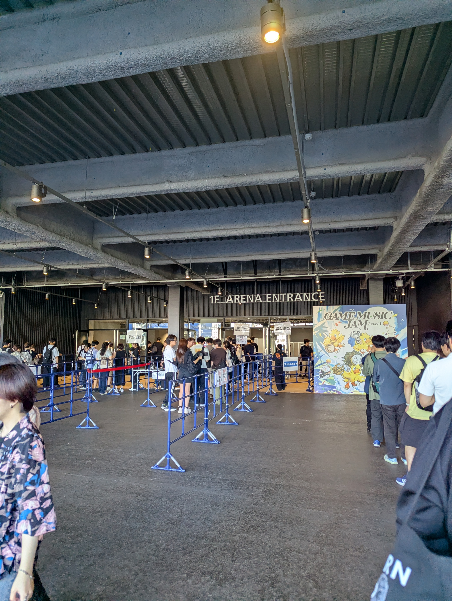
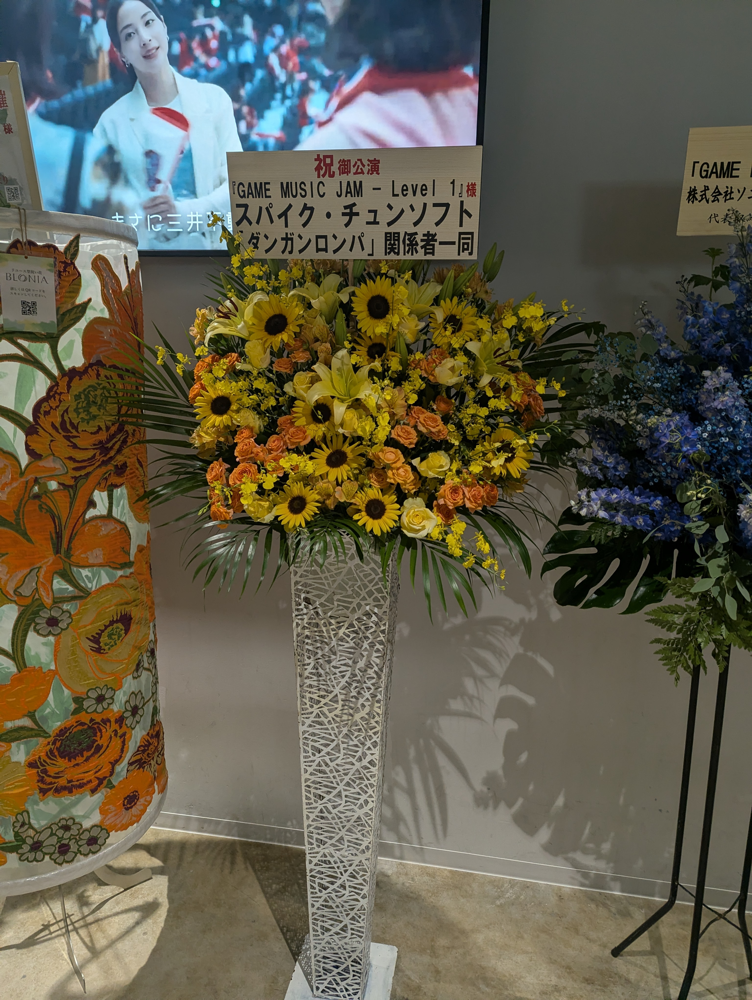
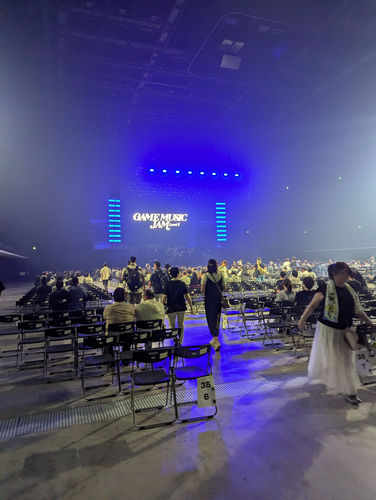

こんばんは。とても暑いですね。溶けます。 今日は日曜日にSQUARE ENIXが主催？のコンサートに行ってきた話です。私自身コンサートの類は人が多くて今まで行ったことなかったんですが、今回FF14やニーアオートマタ等最近やってるタイトルが出るということで行ってみました。 行ってみると外にはグッズ販売のブースがあったんですが人の量がエグいですね。グッズ販売があることは知ってたのでちょっと覗いてみようかなと思ってましたが諦めました。

スマホで受付を済ませて入館。FF14のチームやらスパイクチュンソフトからのお花が並んでました（今回ダンガンロンパも参加してます）

一旦入ってからトイレ行ったんですが、会場のトイレ個室含めて数がめちゃくちゃ多いです。頼もしかったです。
トイレを済ませて席に向かいます。先行予約にて申し込んだのでアリーナ席の割と前の方でした。左の方だったのでカメラには映らずでいられて良かった。あと周りがPRIMALSの服着た人だらけです。あと頭にFF14のレギュレーターつけてる人とかFF14仕様の光るコンサートの棒のやつ持ってる人とか、とにかくFF14目当ての人が大半のような印象でした。

ちなみに椅子が狭くて固いです。座ってる間隣の男の人とずっと半袖で素肌が触れ合ってました。コンサートってこんなもんなんですかね。
時間になって照明が暗くなりました。始めはオープニングアクトということで、FF13、ゼノギアスの歌が流れます。ゼノギアスほ昔やりましたがもう昔で記憶ない。馴染みの無い歌でしたが会場で聴くと迫力というか、なんか違いますね。これからの曲もそうですがとても良かった。 3曲目でFF14のEndWalkerが流れます。周りがざわついたのでみんなFF14目当てだと確信しました。曲の感想についてはみんな良かったので以降基本割愛しますね。
その後クロノトリガーになります。今後の曲もそうですが、音楽が流れるとスクリーンにゲーム画面が出てくるので、どの場面の曲か思い出しやすくて助かりました。クロノトリガーに関してはスクリーンに割とネタバレの画面が流れるので、後のダンガンロンパとかニーアオートマタとか大丈夫だろうかと不安がよぎります。
続いてダンガンロンパ。今後プレイしようと考えているので画面に関してはあまり見ないようにしてました。ノリの良い曲調でゲーム知らなくても結構楽しめますね。
次にニーアオートマタ。私としてはメインで楽しみにしてました。ニーアの歌を歌っている歌手の二人の生歌が聴けてとても満足です。強いて言うならニーアレプリカントのカイネの歌が聴きたかったな。
続いてアンダーテール。原曲のピアノアレンジとして流れました。未プレイなんだけど割とネタバレ部分知ってしまっていてやるのは躊躇している作品。最後に流れたMEGALOVANIAがすごく聞き覚えあったけど気のせいかな？名曲って既視感というか、そういうのありますよね。
そこから10分休憩が入ります。コンサート1日目は休憩無しでそのままFF14だったらしいですが、Xで要望が多くてゲームというコンセプトに合わせて新パッチが入ったとのことです。正直助かる。 この隙であればグッズ販売ブース行けるのではないかと思い直行。予想通り人はそこそこ空いていましたが何買うか迷っているうちに人が増えてきて休憩ギリギリになってしまいました。（Tシャツ買いました。部屋着にしてます）
最後にFF14。ほぼ全員立ち上がってました。座ってるの気まずいので私も立ち上がります。この辺ライブ、コンサートの感じ難しいですね。この辺もXで意見があったのか、奏者の方からは好きにしてとアナウンスがちょくちょくありました。 1日目はアレキサンダー辺りが演奏として多かった見たいですが、今回は新し目曲ということでアルカディアメインでとても良かった。アレキサンダーは全然予習してない。 途中クルルさんが参戦。朱雀の声もしてるんですね。朱雀征魂戦とライトヘビー4層の歌を歌ってくれました。 アレキサンダーの曲もありましたね。時間停止ギミックとして会場の人がみんな止まってました。私も便乗したけど思ったより時間長くて困惑して結構ブレブレだったと思います。
なんやかんや時間は押して4時間くらいでした。聞くだけだけど結構疲れましたね。聞いてる方で疲れるんだから演奏してる人たちはもっと大変だろうな。お疲れ様でした。 今までコンサートとか行かなくても家で曲聞けるから良くないと思ってましたが行ってみると良いものですね。また自分の気に入りそうな物があれば行ってもいいかなと思ったりしました。 以上、ここまで読んで頂いてありがとうございました。